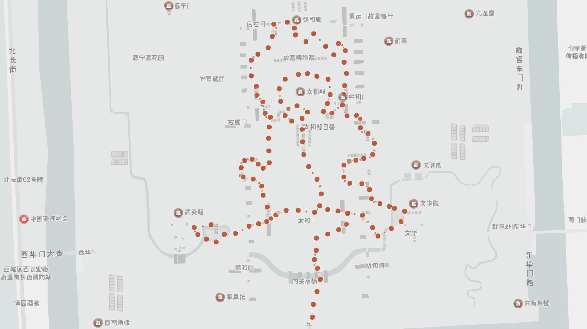
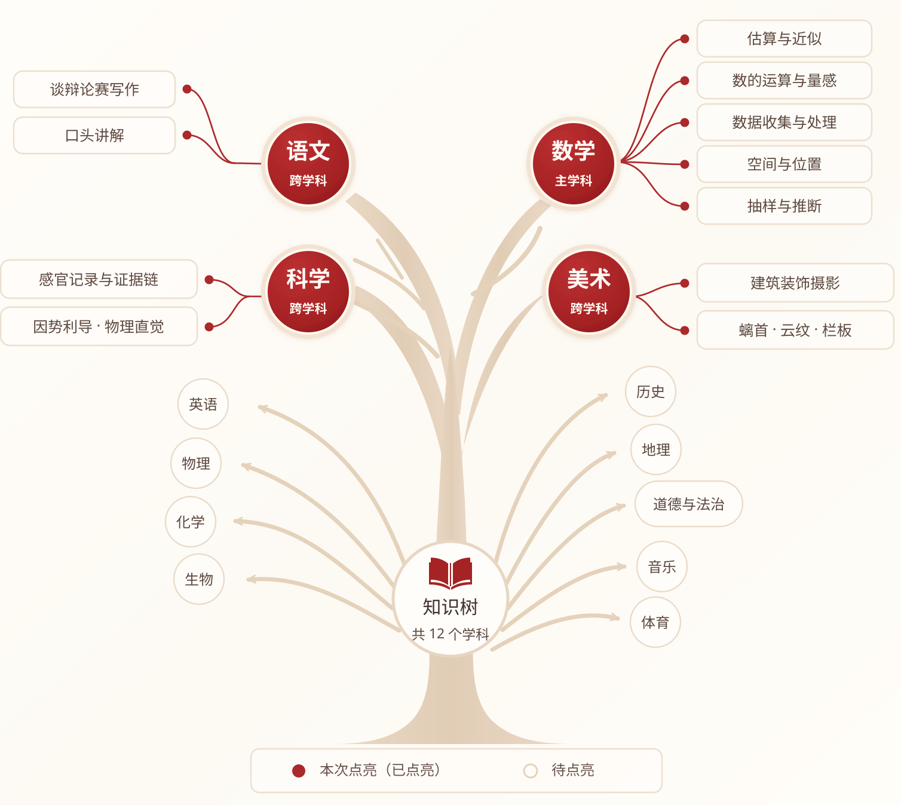

<!DOCTYPE html>
<html lang="zh-CN">
<head>
<meta charset="UTF-8">
<title>研学成长报告 · 数龙官 · 林同学</title>
<style>
/* ========== 设计令牌 ========== */
:root{
  --ink:#231a16;
  --muted:#66584f;
  --light:#8a7a6f;
  --paper:#fffdf8;
  --page:#eee7dc;
  --wash:#f7f1e7;
  --line:#ded3c2;
  --line-dark:#c9b9a3;
  --red:#8c211d;
  --red-dark:#611411;
  --blue:#176987;
  --green:#286b54;
  --gold:#b88738;

  --radius:8px;
  --radius-frame:24px;
  --shadow-frame:0 24px 60px rgba(35,26,22,.14);

  --frame-w:1640px;
  --frame-h:2016px;
  --frame-gap:48px;
  --stage-left:calc(var(--frame-w) / 3);
  --stage-right:48px;

  --fs-title:96px;
  --fs-body:64px;
  --fs-hint:36px;
  --fs-kpi:96px;
  --fs-badge:36px;
  --fs-kicker:64px;
  --fs-icon:64px;
  --fs-card-title:64px;
  --fs-stamp:64px;
  --fs-radar-dim:64px;
  --fs-radar-score:64px;

  --font-display:"Songti SC","Noto Serif SC",serif;
  --font-body:"PingFang SC","Microsoft YaHei","Noto Sans CJK SC",sans-serif;
}

/* ========== 全局重置 ========== */
*,*::before,*::after{margin:0;padding:0;box-sizing:border-box;}
html{font-size:20px;}
body{
  background:var(--page);
  color:var(--ink);
  font-family:var(--font-body);
  font-size:var(--fs-body);
  line-height:1.45;
  -webkit-font-smoothing:antialiased;
}

/* ========== 舞台 ========== */
.stage{
  display:flex;
  justify-content:flex-start;
  gap:var(--frame-gap);
  padding:72px var(--stage-right) 72px var(--stage-left);
  width:max-content;
  min-height:2160px;
  align-items:center;
}

/* ========== 帧 ========== */
.frame{
  width:var(--frame-w);
  height:var(--frame-h);
  flex-shrink:0;
  background:var(--paper);
  border-radius:var(--radius-frame);
  border:1px solid var(--line-dark);
  box-shadow:var(--shadow-frame);
  overflow:hidden;
  display:flex;
  flex-direction:column;
  padding:56px 64px 48px;
}

/* ========== 页眉 ========== */
.frame-header{
  display:flex;
  justify-content:flex-start;
  align-items:center;
  gap:20px;
  padding-bottom:20px;
  border-bottom:3px double var(--line-dark);
  margin-bottom:24px;
  flex-shrink:0;
}
.frame-header .kicker{
  font-size:var(--fs-kicker);
  font-weight:900;
  color:var(--red);
  letter-spacing:.2em;
}
.achievement-frame .frame-header .kicker{letter-spacing:.08em;}
.frame-header .header-logo{
  width:84px;
  height:84px;
  color:var(--red);
  flex:0 0 84px;
}
.ui-icon{
  width:100%;
  height:100%;
  display:block;
  fill:none;
  stroke:currentColor;
  stroke-width:1.9;
  stroke-linecap:round;
  stroke-linejoin:round;
}
.flow-loc .pin-icon{
  width:34px;
  height:34px;
  color:var(--red);
  flex:0 0 34px;
}
.report-figure figcaption .caption-icon{
  width:56px;
  height:56px;
  color:var(--red);
  flex:0 0 56px;
}

/* ========== 标题 ========== */
.frame-title{
  font-family:var(--font-display);
  font-size:var(--fs-title);
  font-weight:900;
  line-height:1.15;
  color:var(--ink);
  margin-bottom:28px;
  flex-shrink:0;
}
.student-named{color:var(--red);}

/* ========== 主角区 ========== */
.hero{
  flex:1 1 auto;
  min-height:0;
  display:flex;
  flex-direction:column;
}

/* ========== Badge ========== */
.badge{
  display:inline-flex;
  align-items:center;
  height:64px;
  padding:0 18px;
  border:1px solid var(--line-dark);
  border-radius:var(--radius);
  font-size:var(--fs-badge);
  line-height:1;
  font-weight:700;
  color:var(--ink);
  background:var(--paper);
  white-space:nowrap;
}
.badge.red{border-color:var(--red);color:var(--red);}
.badge.green{border-color:var(--green);color:var(--green);}

/* ========== 印章 ========== */
.stamp{
  width:80px;
  height:80px;
  border:1.5px solid var(--red);
  border-radius:var(--radius);
  display:inline-flex;
  align-items:center;
  justify-content:center;
  font-family:var(--font-display);
  font-size:var(--fs-stamp);
  line-height:1;
  font-weight:900;
  color:var(--red);
  background:var(--paper);
  flex-shrink:0;
}

/* ========== 进度条 ========== */
.bar{
  height:18px;
  background:#e5d9c8;
  border-radius:999px;
  overflow:hidden;
}
.bar i{
  display:block;
  height:100%;
  background:var(--red);
  border-radius:999px;
}

/* ========== 流程步骤 ========== */
.flow-track{
  display:flex;
  align-items:stretch;
  gap:0;
  background:transparent;
  padding:56px 0 0;
  position:relative;
}
.flow-step{
  flex:1;
  display:flex;
  flex-direction:column;
  align-items:center;
  position:relative;
  min-width:0;
}
.flow-num{
  position:absolute;
  top:-50px;
  left:50%;
  transform:translateX(-50%);
  width:72px;
  height:72px;
  border-radius:50%;
  background:var(--red);
  color:#fff;
  font-size:var(--fs-body);
  line-height:1;
  font-weight:900;
  display:flex;
  align-items:center;
  justify-content:center;
  z-index:3;
}
.flow-card{
  background:var(--paper);
  border:1px solid var(--line);
  border-right:0;
  border-radius:0;
  min-height:190px;
  padding:24px 6px 18px;
  text-align:center;
  width:100%;
  display:flex;
  flex-direction:column;
  justify-content:center;
}
.flow-step:first-child .flow-card{border-radius:16px 0 0 16px;}
.flow-step:last-child .flow-card{border-right:1px solid var(--line);border-radius:0 16px 16px 0;}
.flow-loc{
  font-size:var(--fs-hint);
  color:var(--light);
  display:flex;
  align-items:center;
  justify-content:center;
  gap:6px;
}
.flow-name{
  font-size:var(--fs-body);
  line-height:1.15;
  font-weight:900;
  color:var(--ink);
  margin-top:14px;
  white-space:nowrap;
}
.flow-arrow{
  position:absolute;
  right:-105px;
  top:-17px;
  width:210px;
  border-top:3px dashed var(--red);
  z-index:2;
}
.flow-arrow::after{
  content:"";
  position:absolute;
  right:0;
  top:-8px;
  width:14px;
  height:14px;
  border-top:3px solid var(--red);
  border-right:3px solid var(--red);
  transform:rotate(45deg);
}

/* ========== 数据大卡 ========== */
.stat-grid{
  display:grid;
  grid-template-columns:1fr 1fr;
  gap:20px;
  align-items:stretch;
}
.stat-card{
  background:var(--wash);
  border:1px solid transparent;
  border-radius:16px;
  min-height:240px;
  padding:28px 34px;
  display:grid;
  grid-template-columns:156px 1fr;
  grid-template-areas:"icon label" "icon value";
  column-gap:26px;
  align-items:center;
  text-align:left;
}
.stat-card .icon{
  grid-area:icon;
  width:140px;
  height:140px;
  border:4px solid #d9b170;
  border-radius:50%;
  padding:18px;
  color:#b97820;
}
.stat-card:nth-child(2) .icon,
.stat-card:nth-child(3) .icon,
.stat-card:nth-child(4) .icon{border-color:transparent;padding:20px;}
.stat-card .ui-icon,
.team-icon .ui-icon,
.header-logo .ui-icon{stroke-width:2.4;}
.stat-card .label{
  grid-area:label;
  color:var(--muted);
  font-size:var(--fs-body);
  line-height:1.15;
  font-weight:800;
}
.stat-card .val{
  grid-area:value;
  font-size:var(--fs-kpi);
  font-weight:900;
  color:var(--ink);
  line-height:1.15;
}
.stat-card .val .u{
  font-size:var(--fs-body);
  font-weight:700;
}

/* ========== 团队迷你卡 ========== */
.team-row{
  display:flex;
  gap:20px;
}
.team-mini{
  flex:1;
  background:var(--wash);
  border:1px solid var(--line);
  border-radius:16px;
  min-height:230px;
  padding:28px 26px;
  display:grid;
  grid-template-columns:124px 1fr;
  grid-template-areas:"icon label" "icon value";
  column-gap:20px;
  align-items:center;
  text-align:left;
}
.team-mini .team-icon{
  grid-area:icon;
  width:116px;
  height:116px;
  color:#b97820;
}
.team-mini .tk{
  grid-area:label;
  font-size:var(--fs-body);
  line-height:1.2;
  font-weight:800;
  color:var(--muted);
  margin-bottom:8px;
}
.team-mini .tv{
  grid-area:value;
  font-family:var(--font-display);
  font-size:var(--fs-kpi);
  font-weight:900;
  line-height:1;
}

/* ========== 小组任务完成状态 ========== */
.role-grid{
  display:grid;
  grid-template-columns:repeat(6,1fr);
  gap:10px;
  margin-bottom:28px;
}
.role-card{
  min-width:0;
  min-height:180px;
  background:var(--wash);
  border:1px solid var(--line-dark);
  border-top:5px solid var(--red);
  border-radius:var(--radius);
  padding:16px 4px;
  display:flex;
  flex-direction:column;
  align-items:center;
  justify-content:center;
  text-align:center;
}
.role-check{
  width:54px;
  height:54px;
  border-radius:50%;
  background:var(--red);
  color:#fff;
  display:flex;
  align-items:center;
  justify-content:center;
  flex-shrink:0;
}
.role-check svg{width:32px;height:32px;display:block;}
.role-name{
  font-size:var(--fs-body);
  line-height:1.1;
  font-weight:900;
  color:var(--ink);
  margin-top:12px;
  white-space:nowrap;
}

/* P2 · 新版横向推演图：把图片的多余纵向留白让给上方信息区 */
#p2 .role-grid{
  gap:14px;
  padding:18px;
  margin-bottom:38px;
  background:var(--wash);
  border-radius:16px;
}
#p2 .role-card{
  min-height:196px;
  padding:20px 6px;
  background:var(--paper);
  border:0;
  border-top:5px solid var(--red);
  border-radius:12px;
}
#p2 .role-name{margin-top:16px;}
#p2 .team-row{
  gap:24px;
  margin-bottom:40px !important;
}
#p2 .team-mini{
  min-height:252px;
  padding:32px 30px;
  border:0;
}
#p2 .report-figure figcaption{margin-bottom:24px;}
/* ========== 报告图片 ========== */
.report-figure{
  flex:1;
  min-height:0;
  display:flex;
  flex-direction:column;
}
.report-figure figcaption{
  display:flex;
  align-items:center;
  gap:10px;
  font-size:var(--fs-body);
  line-height:1.3;
  font-weight:900;
  color:var(--ink);
  margin-bottom:16px;
  flex-shrink:0;
}
.report-media{
  flex:1;
  min-height:0;
  background:#fffdf3;
  border:1px solid var(--line);
  border-radius:var(--radius);
  overflow:hidden;
  display:flex;
  align-items:center;
  justify-content:center;
}
.report-media img{
  width:100%;
  height:100%;
  object-fit:contain;
  display:block;
}
.tree-figure .report-media{padding:20px;}

/* ========== P3 · 跨学科学习与素养 ========== */
.learning-layout{
  flex:1;
  min-height:0;
  display:grid;
  grid-template-rows:minmax(0,1fr) auto;
  gap:24px;
}
#p3 .tree-figure .report-media{padding:0;}
#p3 .tree-figure .report-media img{
  object-fit:fill;
}
.literacy-card{
  flex-shrink:0;
  background:var(--ink);
  color:var(--paper);
  border-radius:16px;
  padding:28px 34px 30px;
}
.literacy-card-head{
  display:flex;
  align-items:baseline;
  justify-content:space-between;
  gap:24px;
  margin-bottom:20px;
}
.literacy-card-title{
  font-family:var(--font-display);
  font-size:72px;
  line-height:1.1;
  font-weight:900;
}
.literacy-card-note{
  font-size:var(--fs-hint);
  line-height:1.2;
  color:#d7b0a0;
  font-weight:800;
}
.literacy-tags{
  display:flex;
  gap:12px;
  flex-wrap:wrap;
}
.literacy-tags .badge{
  height:56px;
  border-color:rgba(255,255,255,.42);
  color:var(--paper);
  background:transparent;
  font-size:36px;
}
.literacy-tags .badge.primary{
  border-color:#d9b170;
  color:#f1d39f;
}
.literacy-tags .badge.cross{
  border-color:#7dbda5;
  color:#a9ddca;
}

/* ========== 五维卡 ========== */
.suzhi-layout{
  flex:1;
  min-height:0;
  display:grid;
  grid-template-rows:auto minmax(0,1fr) auto;
  gap:16px;
}
.suzhi-card{
  background:var(--paper);
  border:1px solid var(--line);
  border-left:6px solid var(--red);
  border-radius:var(--radius);
  padding:24px 28px;
}
.suzhi-card .sc-head{
  display:flex;
  align-items:center;
  gap:14px;
  margin-bottom:14px;
}
.dimension-logo{
  width:80px;
  height:80px;
  padding:17px;
  display:inline-flex;
  align-items:center;
  justify-content:center;
  flex:0 0 80px;
  color:var(--red);
  background:var(--wash);
  border:1px solid var(--line);
  border-radius:20px;
}
.dimension-logo .ui-icon{stroke-width:1.8;}
.suzhi-card .sc-title{
  font-size:var(--fs-card-title);
  line-height:1.1;
  font-weight:900;
}
.suzhi-card .badge{
  height:64px;
  padding:0 16px;
  font-size:var(--fs-badge);
}
.suzhi-card .sc-body{
  font-size:var(--fs-body);
  line-height:1.3;
  color:var(--ink);
  margin-top:16px;
}
.suzhi-grid-top{
  display:grid;
  grid-template-columns:repeat(3,1fr);
  gap:20px;
}
.suzhi-grid-top .suzhi-card{min-height:450px;}
.sc-tags{
  display:flex;
  gap:10px;
  flex-wrap:wrap;
}
.sc-metrics{
  display:grid;
  grid-template-columns:1fr;
  gap:16px;
  margin-top:18px;
}
.sc-metric-head{
  display:flex;
  align-items:baseline;
  justify-content:space-between;
  gap:8px;
  margin-bottom:10px;
}
.sc-metric-label{
  font-size:var(--fs-hint);
  color:var(--muted);
  white-space:nowrap;
}
.sc-metric-value{
  font-size:var(--fs-body);
  line-height:1;
  font-weight:900;
  color:var(--red);
}
.health-metrics{
  display:grid;
  grid-template-columns:1fr;
  gap:10px;
  margin-top:14px;
}
.health-metric{
  min-width:0;
  display:flex;
  align-items:baseline;
  gap:6px;
  flex-wrap:nowrap;
  white-space:nowrap;
}
.health-metric b{
  font-family:var(--font-display);
  font-size:72px;
  line-height:1;
  color:var(--red);
}
.health-metric span{
  font-size:var(--fs-hint);
  color:var(--muted);
  font-weight:700;
}
.suzhi-art-card{
  background:var(--paper);
  border:1px solid var(--line);
  border-left:6px solid var(--red);
  border-radius:var(--radius);
  padding:22px 28px 20px;
  display:flex;
  flex-direction:column;
  flex:1;
  min-height:0;
}
.suzhi-art-head{
  display:flex;
  align-items:center;
  justify-content:space-between;
  gap:20px;
  margin-bottom:18px;
  flex-shrink:0;
}
.suzhi-art-head .sc-head{margin:0;}
.suzhi-art-kicker{
  font-size:var(--fs-hint);
  line-height:1.2;
  color:var(--red);
  font-weight:800;
  letter-spacing:.08em;
}
.suzhi-art-photo{
  border-radius:var(--radius);
  overflow:hidden;
  flex:1;
  min-height:0;
  background:var(--wash);
}
.suzhi-art-photo img{
  width:100%;
  height:100%;
  object-fit:cover;
  object-position:center 54%;
  display:block;
}
.suzhi-art-caption{
  padding-bottom:18px;
  flex-shrink:0;
}
.suzhi-art-caption .sc-body{margin-top:0;}
.suzhi-labor-card{
  min-height:270px;
  display:grid;
  grid-template-columns:400px 1fr;
  align-items:center;
  gap:32px;
  padding:24px 32px;
}
.suzhi-labor-card .sc-head{
  margin:0;
  padding-right:32px;
  border-right:1px solid var(--line);
}
.suzhi-labor-content{min-width:0;}
.suzhi-labor-content .sc-body{margin-top:14px;}

/* ========== 雷达图 ========== */
.radar-wrap{
  flex:1;
  display:flex;
  align-items:center;
  justify-content:center;
  min-height:0;
}
.radar-hint{
  font-size:var(--fs-hint);
  color:var(--light);
  text-align:center;
  margin-top:24px;
}
.problem-score-card{
  flex-shrink:0;
  background:var(--red);
  color:#fff;
  border-radius:18px;
  padding:28px 38px 30px;
}
.problem-score-head{
  display:flex;
  align-items:baseline;
  justify-content:space-between;
  gap:28px;
  padding-bottom:18px;
  border-bottom:1px solid rgba(255,255,255,.32);
}
.problem-score-title{
  font-family:var(--font-display);
  font-size:72px;
  line-height:1.15;
  font-weight:900;
}
.problem-score-value{
  display:flex;
  align-items:baseline;
  gap:10px;
  white-space:nowrap;
  font-size:var(--fs-body);
  font-weight:800;
}
.problem-score-value b{
  font-family:var(--font-display);
  font-size:96px;
  line-height:.9;
}
.problem-score-evidence{
  display:grid;
  gap:10px;
  padding-top:20px;
}
.problem-score-evidence p{
  font-size:var(--fs-body);
  line-height:1.4;
  color:rgba(255,255,255,.9);
}
.problem-score-evidence strong{
  color:#fff;
  font-weight:900;
}

/* ========== 雷达详情卡 ========== */
.radar-detail{
  flex:1;
  min-height:0;
  display:grid;
  grid-template-rows:auto auto 1fr;
  gap:20px;
}
.rd-kpi-area{
  display:flex;
  flex-direction:column;
  gap:12px;
}
.rd-kpis{
  display:grid;
  grid-template-columns:1.25fr 1fr 1fr;
  gap:20px;
}
.rd-kpi{
  min-height:310px;
  border:1px solid var(--line-dark);
  border-radius:18px;
  background:var(--paper);
  padding:32px 36px;
  display:flex;
  flex-direction:column;
  justify-content:center;
  min-width:0;
}
.rd-kpi-main{
  background:var(--red);
  color:#fff;
  border-color:var(--red);
  justify-content:space-between;
}
.rd-kpi-top{
  display:flex;
  align-items:center;
  justify-content:space-between;
  gap:20px;
}
.rd-kpi-label{
  font-size:var(--fs-hint);
  line-height:1.2;
  font-weight:900;
  letter-spacing:.08em;
  color:var(--muted);
}
.rd-kpi-main .rd-kpi-label{color:rgba(255,255,255,.78);}
.rd-kpi-main .rd-dim{
  font-family:var(--font-display);
  font-size:var(--fs-body);
  line-height:1.1;
  font-weight:900;
  color:#fff;
  margin-top:14px;
}
.rd-kpi-value-row{
  display:flex;
  align-items:flex-end;
  gap:12px;
}
.rd-kpi-value{
  font-family:var(--font-display);
  font-size:138px;
  line-height:.9;
  font-weight:900;
  color:var(--ink);
}
.rd-kpi-main .rd-kpi-value{font-size:160px;color:#fff;}
.rd-kpi-scale{
  font-size:var(--fs-hint);
  line-height:1;
  color:var(--light);
  padding-bottom:14px;
}
.rd-kpi-main .rd-kpi-scale{color:rgba(255,255,255,.72);}
.rd-rating{
  display:inline-flex;
  align-items:center;
  justify-content:center;
  height:58px;
  padding:0 20px;
  border:2px solid rgba(255,255,255,.68);
  border-radius:999px;
  font-size:var(--fs-hint);
  line-height:1;
  font-weight:900;
  color:#fff;
}
.rd-kpi-note{
  margin-top:14px;
  font-size:var(--fs-hint);
  line-height:1.3;
  color:var(--light);
}
.rd-kpi.positive{
  background:var(--wash);
}
.rd-kpi.positive .rd-kpi-value{color:var(--red);}
.rd-def-mini{
  min-height:54px;
  display:flex;
  align-items:center;
  gap:16px;
  padding:0 6px;
  font-size:var(--fs-hint);
  line-height:1.35;
  color:var(--light);
}
.rd-def-mini strong{color:var(--muted);font-weight:900;white-space:nowrap;}
.rd-evidence,
.rd-conclusion{
  border:1px solid var(--line);
  border-radius:18px;
  padding:32px 38px;
  min-height:0;
}
.rd-evidence{background:var(--wash);}
.rd-section-kicker{
  font-size:var(--fs-hint);
  line-height:1.2;
  font-weight:900;
  letter-spacing:.08em;
  color:var(--red);
}
.rd-section-head{
  display:flex;
  align-items:baseline;
  justify-content:space-between;
  gap:24px;
  margin-bottom:20px;
}
.rd-section-head h3{
  margin:0;
  font-family:var(--font-display);
  font-size:72px;
  line-height:1.15;
  color:var(--ink);
}
.rd-evidence ul{
  list-style:none;
  padding:0;
  margin:0;
  display:grid;
  grid-template-columns:repeat(3,1fr);
  gap:16px;
}
.rd-evidence.count-4 ul{grid-template-columns:repeat(2,1fr);}
.rd-evidence li{
  min-height:174px;
  display:flex;
  flex-direction:column;
  align-items:flex-start;
  justify-content:center;
  gap:10px;
  padding:22px 28px;
  font-size:var(--fs-body);
  line-height:1.25;
  font-weight:900;
  color:var(--ink);
  background:var(--paper);
  border:1px solid var(--line);
  border-radius:14px;
}
.rd-evidence-index{
  font-family:var(--font-display);
  color:var(--red);
  font-size:48px;
  line-height:1;
  font-weight:900;
}
.rd-conclusion{
  border:0;
  border-left:8px solid var(--red);
  background:var(--ink);
  padding:38px 48px;
  display:flex;
  flex-direction:column;
}
.rd-conclusion .rd-section-head{
  padding-bottom:18px;
  border-bottom:1px solid rgba(255,255,255,.32);
  margin-bottom:24px;
}
.rd-conclusion .rd-section-head h3{color:var(--paper);}
.rd-conclusion .rd-section-kicker{color:#d7b0a0;}
.rd-conclusion .rd-why{
  font-size:var(--fs-body);
  line-height:1.4;
  color:var(--paper);
  font-weight:700;
}

/* ========== 维度切换按钮 ========== */
.dim-tabs{
  display:grid;
  grid-template-columns:repeat(5,1fr);
  gap:14px;
  margin-bottom:24px;
  flex-shrink:0;
}
.dim-tab{
  appearance:none;
  height:112px;
  display:flex;
  align-items:center;
  justify-content:center;
  font-size:var(--fs-body);
  line-height:1;
  font-weight:900;
  color:var(--muted);
  background:var(--wash);
  border:2px solid var(--line);
  border-radius:var(--radius);
  cursor:pointer;
  transition:all .2s;
}
.dim-tab.active{
  color:#fff;
  border-color:var(--red);
  background:var(--red);
}
.dim-tab:not(.active):hover{color:var(--ink);border-color:var(--line-dark);}
</style>
</head>
<body>

<div class="stage">
  <article class="frame" id="p1"></article>
  <article class="frame" id="p2"></article>
  <article class="frame" id="p3"></article>
  <article class="frame" id="p4"></article>
  <article class="frame" id="p5"></article>
  <article class="frame" id="p6"></article>
</div>

<script>
const D = {
  student:{name:"林同学",grade:"初二",school:"北京市第 X 中学",role:"数龙官",date:"2026-07-08",team:"第 3 分队 · 青龙组"},
  achieve:{
    duration:"5.5小时",
    steps:14523,
    photos:18,
    reflectWords:412
  },
  team:{size:5, tokens:6, finished:"26/28"},
  radar:{
    参与度:92,投入度:88,合作度:85,敏捷度:78,表达力:90
  },
  radarExplain:{
    参与度:{
      def:"围绕任务地点的实际停留与主动操作程度",
      ref:["移动轨迹密度","拍照次数","备忘录/画板/语音工具使用"],
      avg:81, rating:"优秀",
      why:"移动轨迹覆盖太和殿月台东南西北四面；三层月台各拍 2 张以上有效照片；备忘录、画板、语音三种工具均有使用。"
    },
    投入度:{
      def:"任务作答的认真程度与深度",
      ref:["填报内容丰富度","反思文本长度","画板草稿完成度","语音推理时长"],
      avg:76, rating:"优秀",
      why:"「算其数」写了 132 字分层估算方案；反思卷宗共 412 字并附草稿；语音累计 6.4 分钟，全班平均的 1.6 倍。"
    },
    合作度:{
      def:"与同组同伴形成有效协作的程度",
      ref:["轨迹重合度","时间银行借入/借出","共同产出完成度"],
      avg:79, rating:"良好",
      why:"中层计数环节与同伴路径重合 42%；主动向另一组「送」了 3 分钟；小组 6 张令牌全部集齐、合作完成水系图与演讲。"
    },
    敏捷度:{
      def:"在合理范围内又快又好，速度与正确率的乘积",
      ref:["关卡平均用时","估算误差率","任务完成节奏"],
      avg:72, rating:"良好",
      why:"三个关卡平均用时 17.5 分钟，比推荐 20 分钟节约 12.5%；估算误差仅 1.23%（目标 ±3% 内）。"
    },
    表达力:{
      def:"能否把「我怎么想的」讲清楚",
      ref:["反思文本结构","语音表达","课后演讲"],
      avg:74, rating:"优秀",
      why:"独立完成 4 分 12 秒的水系演讲，讲清「螭首→坡度→暗沟→金水河→护城河」水路；反思文本含 3 处「因为…所以…」结构。"
    }
  }
};

const ICON_PATHS = {
  trophy:'<path d="M8 4h8v4a4 4 0 0 1-8 0V4Z"/><path d="M8 6H5v1a4 4 0 0 0 4 4"/><path d="M16 6h3v1a4 4 0 0 1-4 4"/><path d="M12 12v5"/><path d="M8.5 21h7"/><path d="M10 17h4l1.5 4h-7L10 17Z"/>',
  pin:'<path d="M20 10c0 5-8 11-8 11S4 15 4 10a8 8 0 1 1 16 0Z"/><circle cx="12" cy="10" r="2.5"/>',
  clock:'<circle cx="12" cy="12" r="9"/><path d="M12 7v6l4 2"/>',
  walk:'<circle cx="13" cy="4.5" r="2"/><path d="m9 21 2-7 2-4 3 3 3 1"/><path d="m11 14-3 3-2 4"/><path d="m13 10-3-2-3 3"/>',
  camera:'<path d="M4 8h3l1.5-2h7L17 8h3a2 2 0 0 1 2 2v8a2 2 0 0 1-2 2H4a2 2 0 0 1-2-2v-8a2 2 0 0 1 2-2Z"/><circle cx="12" cy="14" r="4"/>',
  pencil:'<path d="m4 20 4.5-1 10-10a2.1 2.1 0 0 0-3-3l-10 10L4 20Z"/><path d="m13.5 7.5 3 3"/><path d="m5.5 16 3 3"/>',
  users:'<circle cx="9" cy="8" r="3"/><path d="M3 20v-2a6 6 0 0 1 12 0v2"/><circle cx="17" cy="10" r="2.5"/><path d="M16 15a5 5 0 0 1 5 5"/>',
  id:'<rect x="3" y="5" width="18" height="15" rx="2"/><path d="M8 5V3h8v2"/><circle cx="9" cy="11" r="2"/><path d="M6.5 16c.7-1.5 1.5-2 2.5-2s1.8.5 2.5 2"/><path d="M14 10h3M14 14h3"/>',
  shield:'<path d="M12 3 20 6v5c0 5-3.5 8-8 10-4.5-2-8-5-8-10V6l8-3Z"/><path d="m8.5 12 2 2 4-5"/>',
  virtue:'<path d="M20.8 4.6a5.5 5.5 0 0 0-7.8 0L12 5.7l-1.1-1.1a5.5 5.5 0 0 0-7.8 7.8l1.1 1.1L12 21l7.8-7.5 1.1-1.1a5.5 5.5 0 0 0-.1-7.8Z"/>',
  learning:'<path d="M4 19.5A2.5 2.5 0 0 1 6.5 17H20"/><path d="M6.5 2H20v20H6.5A2.5 2.5 0 0 1 4 19.5v-15A2.5 2.5 0 0 1 6.5 2Z"/><path d="M8 7h8M8 11h6"/>',
  health:'<path d="M3 12h4l2-7 4 14 2-7h6"/><path d="M20.8 4.6a5.5 5.5 0 0 0-7.8 0L12 5.7l-1.1-1.1a5.5 5.5 0 0 0-7.8 7.8" opacity=".45"/>',
  art:'<path d="M12 3a9 9 0 1 0 0 18h1.5a2 2 0 0 0 0-4H12a2 2 0 0 1 0-4h4a5 5 0 0 0 5-5c0-2.8-4-5-9-5Z"/><circle cx="7.5" cy="10" r="1"/><circle cx="9.5" cy="6.5" r="1"/><circle cx="14" cy="6.5" r="1"/><circle cx="17" cy="9.5" r="1"/>',
  practice:'<path d="m14.7 6.3 3 3"/><path d="m4 20 5.5-1.5L19 9a2.1 2.1 0 0 0-3-3l-9.5 9.5L4 20Z"/><path d="M4 4h6M7 1v6"/>'
};
function iconSVG(name, className=''){
  return `<svg class="ui-icon ${className}" viewBox="0 0 24 24" aria-hidden="true">${ICON_PATHS[name]}</svg>`;
}
const CHECK = '<svg viewBox="0 0 24 24" fill="none" stroke="currentColor" stroke-width="3" stroke-linecap="round" stroke-linejoin="round" aria-hidden="true"><path d="M5 12.5 9.5 17 19 7.5"/></svg>';

function frameShell(el, kicker, title, bodyHTML){
  const achievementFrame = el.id==='p1' || el.id==='p2';
  el.classList.toggle('achievement-frame', achievementFrame);
  el.innerHTML = `
    <div class="frame-header"><span class="header-logo">${iconSVG('trophy')}</span><span class="kicker">${kicker}</span></div>
    <h1 class="frame-title">${title}</h1>
    <div class="hero">${bodyHTML}</div>
  `;
}

// ============= P1 · 你的这一天（上） =============
frameShell(document.getElementById('p1'), '成就回顾', '你的这一天', `
  <div class="flow-track" style="margin-bottom:28px;">
    ${[
      {n:1,loc:'沉浸空间',name:'任务领取'},
      {n:2,loc:'故宫',name:'观其形'},
      {n:3,loc:'故宫',name:'算其数'},
      {n:4,loc:'故宫',name:'验其差'},
      {n:5,loc:'沉浸空间',name:'真相推演'}
    ].map((s,i,a)=>`
      <div class="flow-step">
        <div class="flow-num">${s.n}</div>
        <div class="flow-card">
          <div class="flow-loc">${iconSVG('pin','pin-icon')} ${s.loc}</div>
          <div class="flow-name">${s.name}</div>
        </div>
        ${i<a.length-1?'<div class="flow-arrow" aria-hidden="true"></div>':''}
      </div>
    `).join('')}
  </div>
  <div class="stat-grid" style="margin-bottom:28px;">
    ${[
      {icon:'clock',label:'探索时长',val:D.achieve.duration,unit:''},
      {icon:'walk',label:'步行步数',val:D.achieve.steps.toLocaleString(),unit:''},
      {icon:'camera',label:'拍摄照片',val:D.achieve.photos,unit:' 张'},
      {icon:'pencil',label:'讨论字数',val:D.achieve.reflectWords,unit:' 字'}
    ].map(k=>`
      <div class="stat-card">
        <div class="icon">${iconSVG(k.icon)}</div>
        <div class="label">${k.label}</div>
        <div class="val">${k.val}<span class="u">${k.unit}</span></div>
      </div>
    `).join('')}
  </div>
  <figure class="report-figure">
    <figcaption>${iconSVG('pin','caption-icon')} 今日行动路线</figcaption>
    <div class="report-media">
      
    </div>
  </figure>
`);

// ============= P2 · 青龙队的这一天 =============
frameShell(document.getElementById('p2'), '成就回顾', '<span class="student-named">青龙队</span>的这一天', `
  <div class="role-grid">
    ${['数龙官','测坡官','寻沟官','引河官','护城官','真相官'].map(role=>`
      <div class="role-card">
        <div class="role-check">${CHECK}</div>
        <div class="role-name">${role}</div>
      </div>
    `).join('')}
  </div>
  <div class="team-row" style="margin-bottom:28px;">
    <div class="team-mini">
      <div class="team-icon">${iconSVG('users')}</div>
      <div class="tk">队伍规模</div>
      <div class="tv">${D.team.size}<span style="font-size:var(--fs-body);font-family:var(--font-body);"> 人</span></div>
    </div>
    <div class="team-mini">
      <div class="team-icon">${iconSVG('id')}</div>
      <div class="tk">身份令牌</div>
      <div class="tv">${D.team.tokens}<span style="font-size:var(--fs-body);font-family:var(--font-body);">/6</span></div>
    </div>
    <div class="team-mini">
      <div class="team-icon">${iconSVG('shield')}</div>
      <div class="tk">任务完成</div>
      <div class="tv">${D.team.finished}</div>
    </div>
  </div>
  <figure class="report-figure">
    <figcaption>你们今日的推演结果</figcaption>
    <div class="report-media">
      
    </div>
  </figure>
`);

// ============= P3 · 点亮的学科领域 =============
frameShell(document.getElementById('p3'), '跨学科学习', '点亮的学科领域', `
  <div class="learning-layout">
    <figure class="report-figure tree-figure">
      <div class="report-media">
        
      </div>
    </figure>
    <section class="literacy-card" aria-label="点亮的素养">
      <div class="literacy-card-head">
        <h2 class="literacy-card-title">点亮的素养</h2>
        <span class="literacy-card-note">本次研学过程证据</span>
      </div>
      <div class="literacy-tags">
        <span class="badge primary">数感</span><span class="badge primary">量感</span><span class="badge primary">运算能力</span>
        <span class="badge primary">空间观念</span><span class="badge primary">推理意识</span><span class="badge primary">应用意识</span>
        <span class="badge cross">证据意识</span><span class="badge cross">系统思维</span>
        <span class="badge">科学精神</span><span class="badge">文化认同</span>
      </div>
    </section>
  </div>
`);

// ============= P4 · 综合素质评价过程证据 =============
frameShell(document.getElementById('p4'), '能力发展', '综合素质评价过程证据', `
  <div class="suzhi-layout">
    <div class="suzhi-grid-top">
      <div class="suzhi-card">
        <div class="sc-head"><span class="dimension-logo">${iconSVG('virtue')}</span><div class="sc-title">思想品德</div></div>
        <div class="sc-body">本课收获：</div>
        <div class="sc-tags">
          <span class="badge">文化认同</span><span class="badge">辩证思考</span><span class="badge">敬畏而不神化</span>
        </div>
      </div>
      <div class="suzhi-card">
        <div class="sc-head"><span class="dimension-logo">${iconSVG('learning')}</span><div class="sc-title">学业成就</div></div>
        <div class="sc-metrics">
          <div>
            <div class="sc-metric-head"><span class="sc-metric-label">估算精度</span><b class="sc-metric-value">96%</b></div>
            <div class="bar"><i style="width:96%"></i></div>
          </div>
          <div>
            <div class="sc-metric-head"><span class="sc-metric-label">反思深度</span><b class="sc-metric-value">92%</b></div>
            <div class="bar"><i style="width:92%"></i></div>
          </div>
        </div>
      </div>
      <div class="suzhi-card">
        <div class="sc-head"><span class="dimension-logo">${iconSVG('health')}</span><div class="sc-title">身心健康</div></div>
        <div class="sc-body">今日运动：</div>
        <div class="health-metrics">
          <div class="health-metric"><b>10.2</b><span>km</span></div>
          <div class="health-metric"><b>${D.achieve.steps.toLocaleString()}</b><span>步</span></div>
        </div>
      </div>
    </div>
    <div class="suzhi-card suzhi-art-card">
      <div class="suzhi-art-head">
        <div class="sc-head"><span class="dimension-logo">${iconSVG('art')}</span><div class="sc-title">艺术素养</div></div>
        <div class="suzhi-art-kicker">建筑审美 · 影像观察</div>
      </div>
      <div class="suzhi-art-caption">
        <div class="sc-body">今日你发现的美：</div>
      </div>
      <div class="suzhi-art-photo">
        
      </div>
    </div>
    <div class="suzhi-card suzhi-labor-card">
      <div class="sc-head"><span class="dimension-logo">${iconSVG('practice')}</span><div class="sc-title">社会实践</div></div>
      <div class="suzhi-labor-content">
        <div class="sc-tags">
          <span class="badge">协作意识</span><span class="badge">责任担当</span><span class="badge">面向公众表达</span>
        </div>
        <div class="sc-body">主动送时，与小组完成水系图和班级演讲。</div>
      </div>
    </div>
  </div>
`);

// ============= P5 · 活动参与过程评价（雷达图） =============
function radarSVG(){
  const keys = Object.keys(D.radar);
  const vals = keys.map(k=>D.radar[k]);
  const cx=450, cy=450, R=250;
  const n=keys.length;
  const angle = (i)=> -Math.PI/2 + (2*Math.PI*i/n);

  const ringLevels = [100,80,60,40,20];
  const rings = ringLevels.map(lv=>{
    const r = R*lv/100;
    const pts = Array.from({length:n}).map((_,i)=>{
      const a=angle(i);
      return `${cx+r*Math.cos(a)},${cy+r*Math.sin(a)}`;
    }).join(' ');
    return `<polygon points="${pts}" fill="none" stroke="var(--line)" stroke-width="${lv===100?1.5:0.8}" stroke-dasharray="${lv===100?'none':'4 3'}"/>`;
  }).join('');

  const scaleLabels = [20,40,60,80].map(lv=>{
    const r = R*lv/100;
    return `<text x="${cx+12}" y="${cy-r+12}" font-size="36" fill="var(--light)" font-family="var(--font-body)" opacity="0.8">${lv}</text>`;
  }).join('');

  const axes = keys.map((_,i)=>{
    const a=angle(i);
    return `<line x1="${cx}" y1="${cy}" x2="${cx+R*Math.cos(a)}" y2="${cy+R*Math.sin(a)}" stroke="var(--line)" stroke-width="0.8"/>`;
  }).join('');

  const dataPts = vals.map((v,i)=>{
    const a=angle(i);
    const r=R*v/100;
    return `${cx+r*Math.cos(a)},${cy+r*Math.sin(a)}`;
  });
  const dataPoly = `<polygon points="${dataPts.join(' ')}" fill="rgba(140,33,29,.10)" stroke="var(--red)" stroke-width="3"/>`;
  const dots = dataPts.map(p=>`<circle cx="${p.split(',')[0]}" cy="${p.split(',')[1]}" r="8" fill="var(--red)"/>`).join('');

  const labels = keys.map((k,i)=>{
    const a=angle(i);
    const lR=R+100;
    const x=cx+lR*Math.cos(a);
    const y=cy+lR*Math.sin(a);
    const v=vals[i];
    const labelY=y-28;
    const badgeY=y;
    return `<g class="radar-vertex" data-k="${k}">
      <text x="${x}" y="${labelY}" text-anchor="middle" font-size="64" fill="var(--muted)" font-family="var(--font-body)" font-weight="700">${k}</text>
      <rect x="${x-70}" y="${badgeY}" rx="39" ry="39" width="140" height="78" fill="var(--red)" opacity="0.92"/>
      <text x="${x}" y="${badgeY+59}" text-anchor="middle" font-size="64" fill="#fff" font-weight="900" font-family="var(--font-body)">${v}</text>
    </g>`;
  }).join('');

  return `<svg viewBox="0 0 900 900" style="width:100%;max-height:1100px;display:block;margin:0 auto;">
    ${rings}${scaleLabels}${axes}${dataPoly}${dots}${labels}
  </svg>`;
}

frameShell(document.getElementById('p5'), '活动参与过程评价', '活动参与过程评价', `
  <div class="radar-wrap">${radarSVG()}</div>
  <section class="problem-score-card" aria-label="综合问题解决指数">
    <div class="problem-score-head">
      <h2 class="problem-score-title">综合问题解决指数</h2>
      <div class="problem-score-value"><b>A</b><span>级</span></div>
    </div>
    <div class="problem-score-evidence">
      <p><strong>个人任务：</strong>出色完成，误差较小，身份卡已获得。</p>
      <p><strong>团队任务：</strong>出色完成，已集齐信息，完整推演故宫水系结构。</p>
    </div>
  </section>
`);

// ============= P6 · 活动参与过程评价 · 详情 =============
const defaultRadarKey = '投入度';
frameShell(document.getElementById('p6'), '活动参与过程评价', '活动参与过程评价 · 详情', `
  <div class="dim-tabs" id="dimTabs">
    ${Object.keys(D.radar).map(k=>`<button type="button" class="dim-tab${k===defaultRadarKey?' active':''}" data-k="${k}" aria-pressed="${k===defaultRadarKey?'true':'false'}">${k}</button>`).join('')}
  </div>
  <div class="radar-detail" id="radarDetail"></div>
`);

// ============= 交互：P6 维度切换 =============
(function(){
  const $box = document.getElementById('radarDetail');
  const tabs = document.querySelectorAll('#dimTabs .dim-tab');
  let activeK = null;

  function showDim(k){
    if(activeK===k) return;
    activeK = k;
    const info = D.radarExplain[k];
    const v = D.radar[k];
    const diff = v - info.avg;
    const diffLabel = diff>0?'领先班均':(diff<0?'低于班均':'对比班均');
    const diffValue = diff>0?`+${diff}`:`${diff}`;
    tabs.forEach(t=>{
      const isActive = t.dataset.k===k;
      t.classList.toggle('active', isActive);
      t.setAttribute('aria-pressed', isActive?'true':'false');
    });
    $box.innerHTML = `
      <div class="rd-kpi-area">
        <div class="rd-kpis">
          <section class="rd-kpi rd-kpi-main">
            <div class="rd-kpi-top"><span class="rd-kpi-label">当前维度</span><span class="rd-rating">${info.rating}</span></div>
            <div class="rd-dim">${k}</div>
            <div class="rd-kpi-value-row"><strong class="rd-kpi-value">${v}</strong><span class="rd-kpi-scale">/ 100</span></div>
          </section>
          <section class="rd-kpi">
            <span class="rd-kpi-label">班级均分</span>
            <div class="rd-kpi-value-row"><strong class="rd-kpi-value">${info.avg}</strong></div>
            <span class="rd-kpi-note">本次班级平均表现</span>
          </section>
          <section class="rd-kpi${diff>=0?' positive':''}">
            <span class="rd-kpi-label">${diffLabel}</span>
            <div class="rd-kpi-value-row"><strong class="rd-kpi-value">${diffValue}</strong></div>
            <span class="rd-kpi-note">同维度横向比较</span>
          </section>
        </div>
        <div class="rd-def-mini"><strong>指标说明</strong><span>${info.def}</span></div>
      </div>
      <section class="rd-evidence count-${info.ref.length}">
        <div class="rd-section-head"><h3>过程证据</h3><span class="rd-section-kicker">${info.ref.length} 项有效证据</span></div>
        <ul>${info.ref.map((r,i)=>`<li><span class="rd-evidence-index">0${i+1}</span><span>${r}</span></li>`).join('')}</ul>
      </section>
      <section class="rd-conclusion">
        <div class="rd-section-head"><h3>评价结论</h3><span class="rd-section-kicker">AI 总结</span></div>
        <div class="rd-why">${info.why}</div>
      </section>
    `;
  }

  tabs.forEach(t=>t.addEventListener('click',()=>showDim(t.dataset.k)));
  showDim(defaultRadarKey);
})();
</script>

<script>
// 临时开关：明天关闭时改为 false，再运行 $deploy-stu-report。
const AUTO_REFRESH_AFTER_DEPLOY = true;
const AUTO_REFRESH_INTERVAL_MS = 3000;

if (AUTO_REFRESH_AFTER_DEPLOY && /^https?:$/.test(window.location.protocol)) {
  let currentDeployVersion = null;
  let deployCheckInFlight = false;

  function checkDeployVersion(){
    if(deployCheckInFlight) return;
    deployCheckInFlight = true;

    const probe = document.createElement('script');
    probe.async = true;
    probe.src = `public/deploy-version.js?_=${Date.now()}`;
    probe.onload = ()=>{
      const nextVersion = window.__STU_REPORT_LATEST_VERSION__;
      probe.remove();
      deployCheckInFlight = false;
      if(!nextVersion) return;
      if(currentDeployVersion === null){
        currentDeployVersion = nextVersion;
        return;
      }
      if(nextVersion !== currentDeployVersion){
        const refreshURL = new URL(window.location.href);
        refreshURL.searchParams.set('deploy', nextVersion);
        window.location.replace(refreshURL.toString());
      }
    };
    probe.onerror = ()=>{
      probe.remove();
      deployCheckInFlight = false;
    };
    document.head.appendChild(probe);
  }

  checkDeployVersion();
  window.setInterval(checkDeployVersion, AUTO_REFRESH_INTERVAL_MS);
}
</script>

</body>
</html>
